Šumava
Rozsáhlé lesy, zamrzlá jezera a tichá zimní krajina ideální pro klidné procházky a běžky mimo davy.
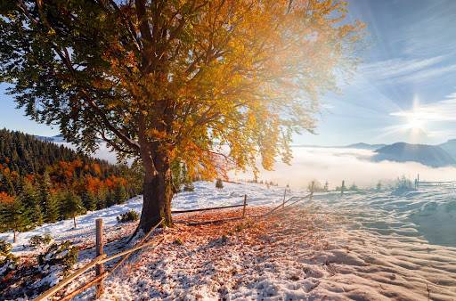
Krkonoše
Nejvyšší české hory nabízejí zasněžené hřebeny, výhledy a klasickou zimní horskou atmosféru.
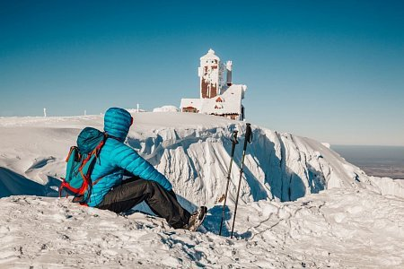
Jizerské hory
Oblíbené pro běžkaře a klidnou zimní přírodu s hustými lesy a upravenými trasami.
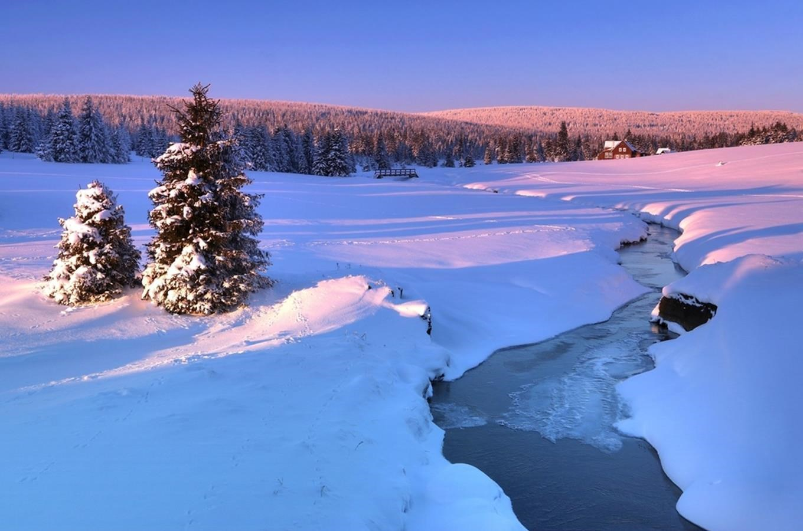
Orlické hory
Méně turistů, klidná zimní krajina a ideální podmínky pro pohodové horské výlety.
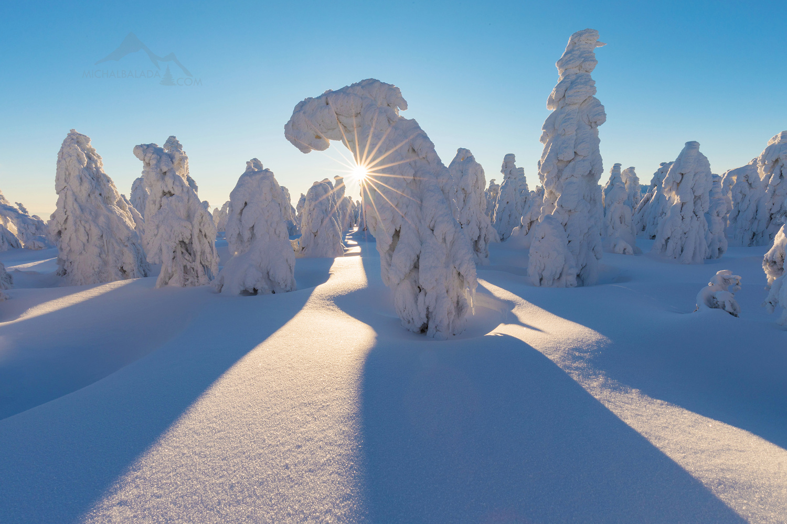
Nízké Tatry
Divoká horská příroda s dlouhými hřebeny, sněhem a možností náročnějších zimních túr.

Vysoké Tatry
Dramatické štíty, hluboký sníh a jedny z nejkrásnějších zimních hor ve střední Evropě.
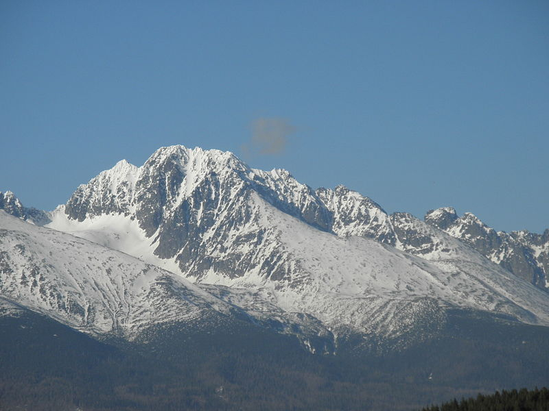
Alpy
Perfektně zasněžené vrcholy, tichá údolí a ikonická alpská zimní krajina.
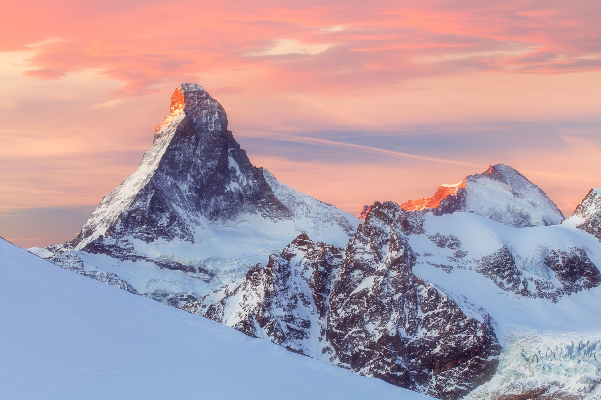
Laponsko
Nekonečné sněhové pláně, lesy a ticho s typickou polární atmosférou severu.
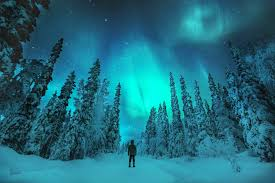
Norsko
Fjordy, hory a severní příroda, kde se sníh a moře mísí v dramatické scenérie.
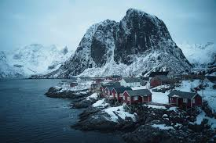
Grónsko
Extrémní ledová divočina, ledovce a absolutní ticho bez civilizace.
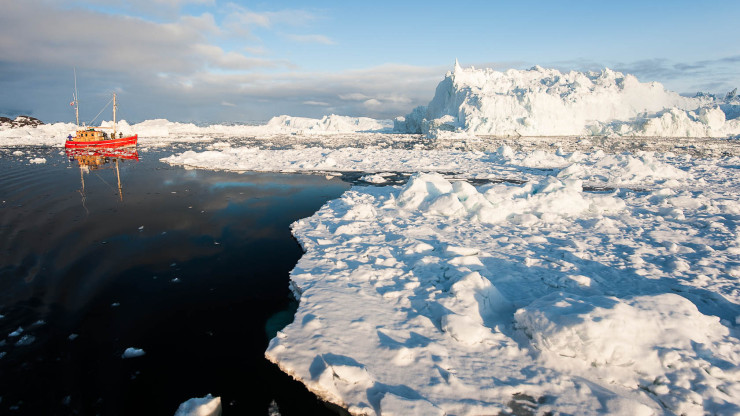
Island
Sopky, ledovce a zamrzlé vodopády vytvářejí jednu z nejunikátnějších zimních krajin světa.
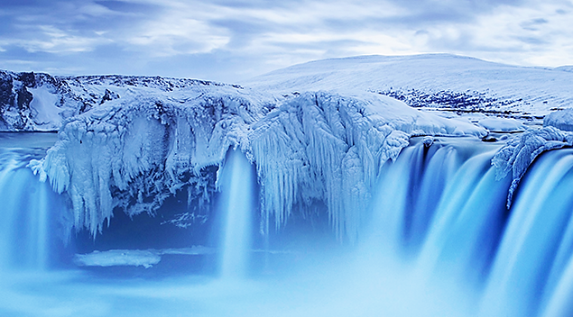
Černá Hora
oblasti jako Prokleté hory nabízejí divokou přírodu. Ideální pro dobrodružnější výpravy mimo davy.
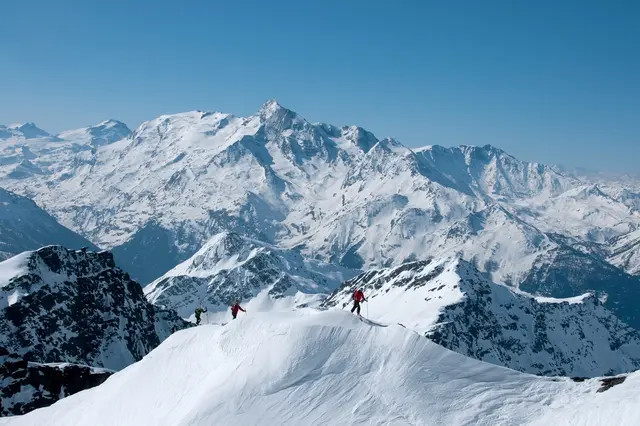